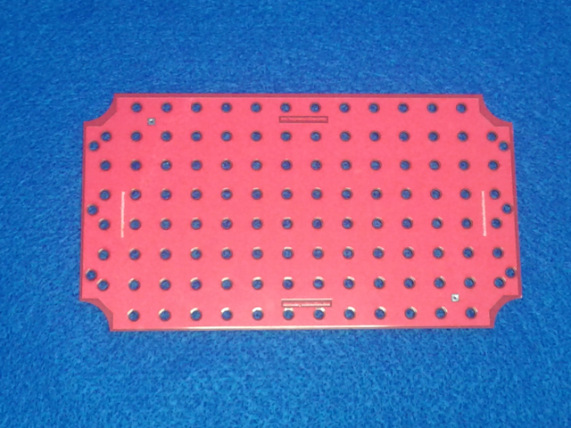
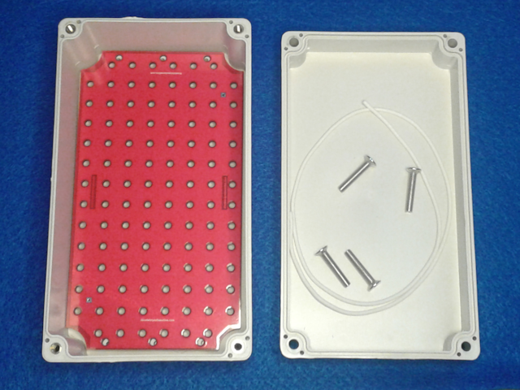
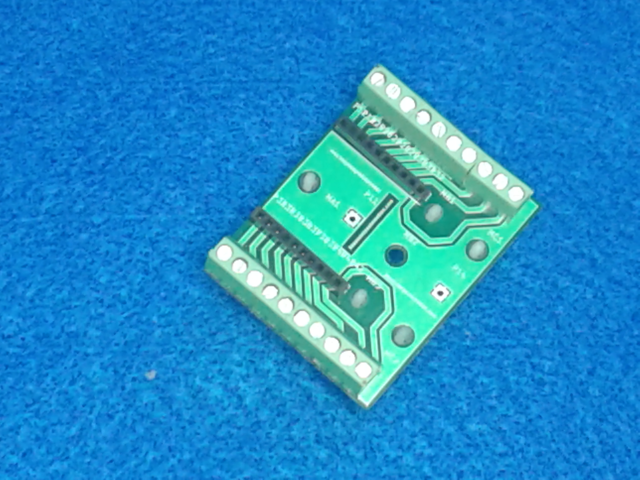
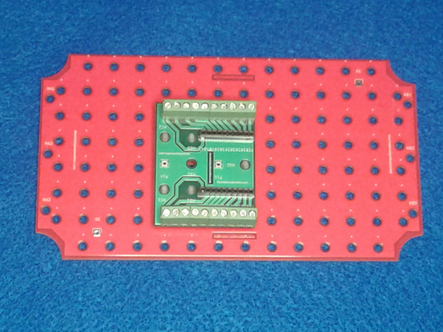

This is the basic template to make backplates with 10.16 mm spaced holes to be installed inside "generic" waterproof enclosures.
Search term to find most common sizes of unbranded waterproof enclosure boxes


The template also could be used to make boards with electronic components with mounting holes compatible with backplates


To use the template to make a backplate just delete the unused mounting holes, and delete/add/adjust contour lines to fit into the
enclosure box.
To use the template to make a board with electronic components, follow the previous step, but add the electronic components
in schematic, and update pcb.
(c)2020 Alberto Nunez.